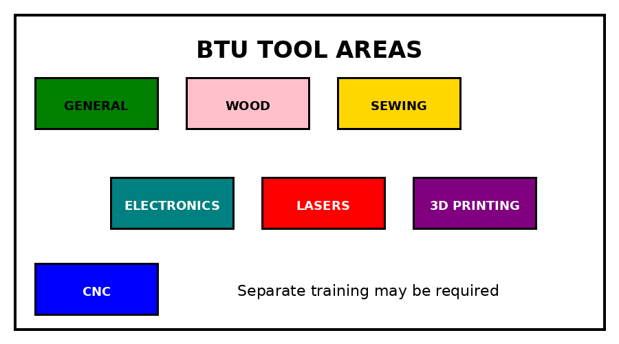

BTU uses colors to help identify tool groups and materials. General tools are green, the wood shop entrance is pink, sewing and textiles are yellow, electronics are teal, lasers are red, 3D printing is purple, and CNC equipment is blue.

The color labels help visitors identify the correct tools and supplies.
General Tools
Label color: Green. BTU keeps a large collection of general tools for many kinds of projects and can support many makers working at once.
Available Equipment and Materials
Knives and cutting mats
Scissors that are not for fabric
Measuring tools
Glues, hot glue guns, tapes, and zip ties
Screwdrivers, drills, drivers, and Dremel tools
Laser-safe plywood and plastics
Papers and two-dimensional craft supplies
Three-dimensional craft supplies
Fasteners, sandpaper, and sanding tools
Saws, files, and chisels
Fabrics and additional shared tools
Wood Shop
Entrance color: Pink. Tools inside the wood shop have their own color system.
Access and Orientation
Wood shop access is separate from general BTU access. Registration and an orientation are required. Orientations are listed on the Events and Workshops page and are led by Mischief Makers.
For safety, the table saw, band saw, belt sander, chop saw, and drill press are powered off every day from 10:00 p.m. to 6:00 a.m. Tampering with the timers is a serious safety violation.
Equipment
Table saw, band saw, drill press, and chop saw
Belt sander and random orbit sander
Palm router
Drills and drivers
Hand saws, files, measuring tools, and other hand tools
Wood Shop Policies
Complete the wood shop orientation before using the area.
Follow all safety rules without exception.
Do not work alone when nobody could hear you call for help.
Do not use a tool that you do not understand. Ask for help.
Do not permanently alter a machine.
Do not remove tools without staff approval.
Do not repair malfunctioning tools. Report the problem to staff.
Staff may remove access when needed for safety.
Deadlines and fatigue are not reasons to ignore a safety policy.
Violations can require the general and wood shop orientations to be repeated. Repeated violations can also reduce access for the entire community.
Sewing and Textiles
Label color: Yellow.
Training
Staff and community members provide training by request. Sewing is also taught in some workshops. A Mischief Maker can help a new user get started.
Equipment
Multi-stitch sewing machines
Four-thread serger
Industrial sewing machine
Cutting mats
Fabric scissors and knives
Pins and needles
Iron and ironing board
Assorted fabrics
Electronics
Label color: Teal, cyan, turquoise, or aqua.
Training
Electronics and coding help is available by request from staff and community members. These skills are also taught in ATLAS classes and BTU workshops.
Equipment and Supplies
Soldering irons and accessories
Benchtop power supplies
Soldering rework station
Digital oscilloscope
Arduino and Raspberry Pi equipment
Power, input, and output components
LilyPad components
Prototyping supplies
Laser Cutters
Label color: Red.
Access
Laser access is separate from general BTU access and requires an orientation. Class assignments should first be supported by the class instructor, learning assistant, or teaching assistant. Lazor Wizards may then provide additional help when available.
Equipment and Materials
75-watt carbon dioxide laser with a 30 by 18 inch bed, or 762 by 457 millimeters
75-watt carbon dioxide laser with a 40 by 28 inch bed, or 1016 by 711 millimeters
Assorted plywood, plastics, cardboard, papers, and fabrics
Steps Toward Independent Access
Complete the laser cutter orientation listed on the BTU calendar.
For class work, ask the class instructor, learning assistant, or teaching assistant first.
While help is still needed, schedule time with a Lazor Wizard.
Use guided access until independent and correct operation is demonstrated.
After demonstrating proper use, receive independent access.
Reserve one-hour blocks on the whiteboard beside each laser, except during scheduled orientations.
Contact the Lazor Wizards
Use the subject line Lazor Wizards and email the group at:
Class printing should be coordinated by instructors, learning assistants, or teaching assistants. Students should ask their class team first and then a Mischief Maker when available. Hardware and software change often, so users should follow current staff instructions.
Printers in the main space are for their intended use. Extra printers may be available for experiments with staff help. Jobs are first come, first served, and PrusaSlicer is required.
Intended Use Rules
Do not change any part of a printer.
Use PLA or ABS unless staff approve another material.
Do not teach yourself on lab equipment. Learn with staff.
Use the required PrusaSlicer settings rather than third-party slicing software.
Work with staff while the file-management system is being updated.
Equipment and Materials
Three Prusa MK4 FDM printers
Three Prusa MK3S+ FDM printers
Four Prusa MINI2 FDM printers
Additional experimental FDM printers with staff approval
1.75 millimeter PLA filament in black and assorted colors
1.75 millimeter ABS filament in black and assorted colors
BTU added a Shaper Origin CNC router in 2026 through community support. A brief training is required before use. Class projects should be coordinated through the instructor, learning assistant, or teaching assistant, followed by Mischief Maker support when available.